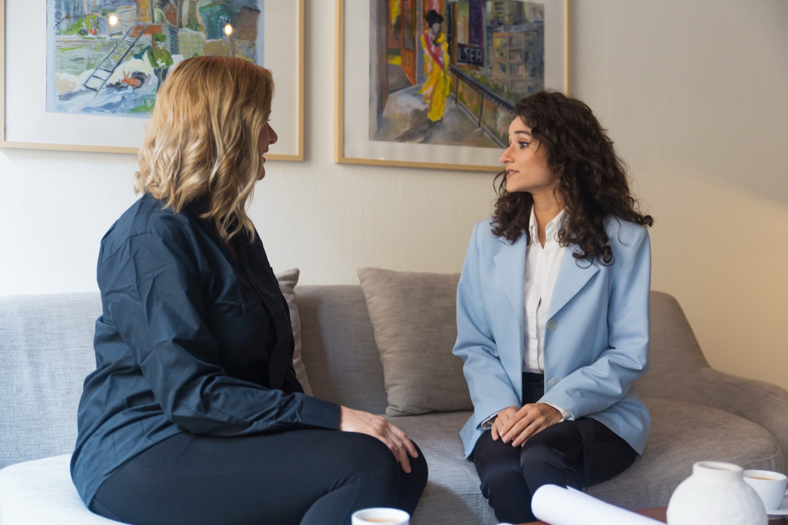
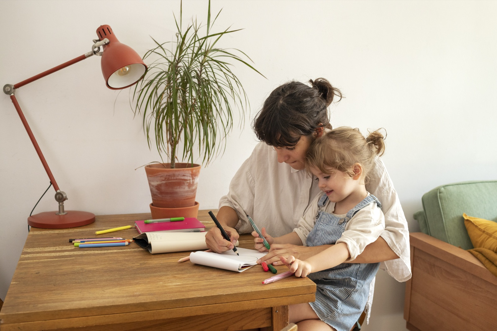
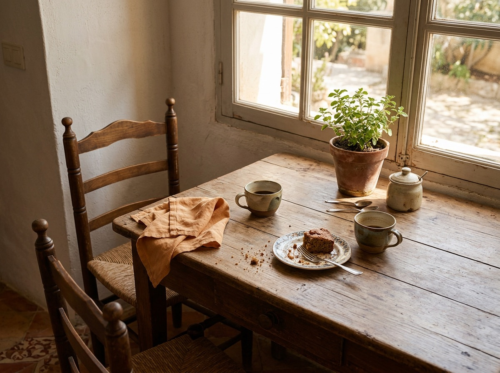

Psicóloga para niños, adolescentes, familias, parejas y adultos.
Hola, soy Claudia. Nos vemos en mi consulta de Barcelona o por videollamada, donde estés más a gusto.
Puedes venir con una idea clara de lo que te pasa o solo con la sensación de que algo no va bien. Con eso basta para empezar.

En Barcelona u online
[Foto de Claudia pendiente.]
Quién soy
Soy curiosa y reflexiva. Escucho con atención y procuro que te sientas a gusto contándome lo que te pasa.
Me motiva ver a la gente cambiar, y para eso parto de su historia tal como es, sin juzgarla. Soy cercana, pero no dejo de ser tu psicóloga.
Mi enfoque es integrador y lo ajusto a lo que necesita la persona que tengo delante. Formo parte de equipos multidisciplinares.
- Colegiadanº [número]
- Formación[Titulación, máster y habilitación sanitaria: pendiente.]
- ConsultaEn Barcelona o por videollamada
Qué ofrezco
No hace falta que sepas cuál necesitas: lo vemos en la primera sesión.
-
Foto de ejemplo Terapia individual
Ansiedad, tristeza, un duelo, una decisión a la que no paras de dar vueltas o un malestar que arrastras desde hace tiempo. Las sesiones son solo contigo.
-
Foto de ejemplo Terapia de pareja
Si tu pareja y tú discutís siempre por lo mismo, o ya no sabéis si seguir juntos, trabajo con los dos a la vez.
-
Foto de ejemplo Terapia familiar
Cuando algo en casa afecta a todos: una separación, un duelo, la convivencia con un adolescente.
-

Foto de ejemplo Terapia infantojuvenil
Miedos, rabietas, cambios de humor, problemas en el colegio. Adapto la forma de trabajar a la edad de cada niño o adolescente.
-
Foto de ejemplo Neuroevaluación
Para cuando a alguien le cuesta aprender o prestar atención y no se sabe por qué. Al terminar, te entrego un informe por escrito.
Cómo trabajo
Lo que puedes esperar de mí en cualquiera de las terapias.
-
Atención individualizada
Antes de proponerte nada, te escucho hasta entender por qué vienes y qué te gustaría cambiar.
-
Terapia integradora
Tomo de distintos enfoques lo que a ti te sirva, y sobre la marcha revisamos si funciona.
-
Supervisión de casos con un equipo terapéutico
Comento los casos con otros profesionales, sin datos que te identifiquen. Así no dependes solo de mi criterio.
-
Formación constante
Sigo formándome. [Cursos y especializaciones recientes: pendiente.]
-
Estudios y experiencia
[Titulación, máster y años de consulta: pendiente.] Y cada semana de consulta me sigue enseñando.
Pedir una primera sesión
Me cuentas qué te trae, te explico cómo trabajo y al final vemos si seguimos.
Si prefieres preguntar algo antes, escríbeme.
